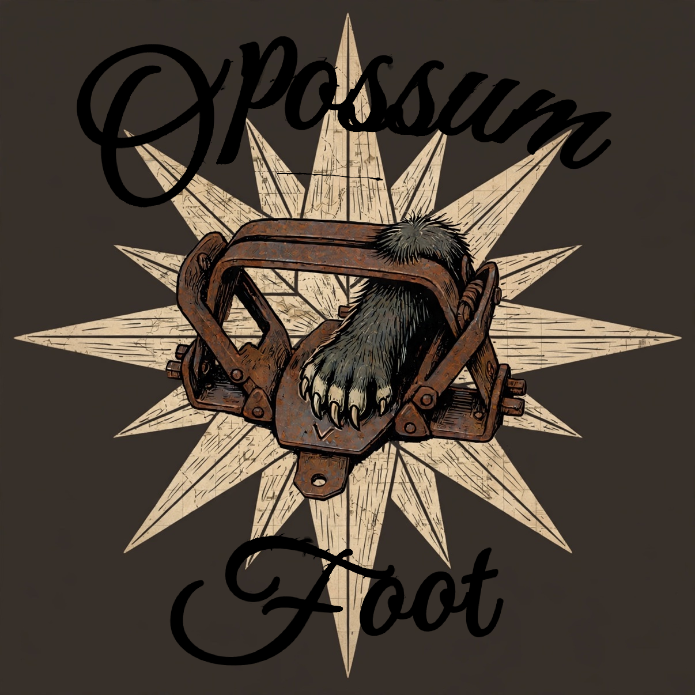

A pocket trapping notebook.
Loading…
We'll load that state's season reminders. You can change it anytime in Settings — handy near state lines.
The map will open here every time — your county, your farms, right where you trap. Takes ten seconds, and you can change it anytime in Settings.
One line at a time — everything follows the active line.
Every catch, newest first.
What's actually producing?
Your numbers for the season.
Licenses and landowner info, kept on this phone only.
Tap a photo to view it — or attach its website link, like the DNR page where you bought it.
Who owns the ground you trap — phone numbers, permission slips, boundaries, and the notes you don't want to forget.
Opossum Foot beta.
Applies to the active trap line (). Changing the state takes effect immediately.
Not set — the map opens on your trapping state.
Sets past this long without any activity turn red on the map. Any edit, catch, or check-in restarts the clock. The quick “Checked — nothing changed” button only restarts the clock — it saves nothing to History. Turn alerts off to hide the red pins and countdowns.
Map chip with current conditions and the next 12 hours; weather auto-attaches to new sets and catches. Sends coordinates to Open-Meteo, a free weather service — needs a connection.
Small arrows at the edge of each pin show the downwind direction — where your scent goes. They appear when you're zoomed in close, and use live wind data when you're online.
Dictate notes and record voice memos. Transcription uses your phone's speech recognition and needs a connection; recordings stay on this phone.
Odometer trips per line, the route estimate, and the standalone mileage CSV — its own report for your records or reimbursement.
Choose which tabs appear on the bottom bar for the active trap line (). Map, Lines, and Settings always show.
Choose which fields appear when you add a set. Set name, Status, and Date set always show — they're required.
Pin colors — applies to the map pins and the four status filter chips.
Your spots never leave your phone.
Opossum Foot has no account, no login, and no cloud. Every set, catch, photo, and voice memo is stored only in this phone's browser storage. Nothing you enter is stored anywhere else — the only network traffic is map tiles, the app's own files, weather lookups (only if you turn weather on), and live voice transcription (only when you tap the microphone and have a connection).
The honest catch: because there's no cloud backup, a lost phone, a wiped phone, or clearing this browser's data can destroy your records. Export a CSV backup regularly — that's your safety net.
Coordinates stay hidden so screenshots are safe to share. Turn this on to see the county and exact coordinates on set details and the weather tab.
Off by default, so shared spreadsheets never carry your pins. Turn this on when you want Latitude and Longitude columns in the CSV exports.
No accounts. No cloud. No analytics. Sponsors keep Opossum Foot free — no popups, no tracking, no nonsense.
Season reminders are reminders only — always verify with your state agency and local ordinances.
Build —
The trapper's guide to the app, and the legal notices.
Full backup
Saves a full Opossum Foot backup file (.json) — import it back after a reinstall.
Reads back an Opossum Foot backup file (.json) from this phone.
Reads pin files (.kml / .geojson) from Google Maps, My Maps, or Google Takeout.
Reports
Set the filters, watch the match count, then download the report you want. The filters shape the catches report only — the sets and mileage downloads always include everything.
Downloads your catches as a spreadsheet file (.csv), honoring the filters above.
Downloads your sets as a spreadsheet file (.csv).
Downloads this line's trip log as a spreadsheet file (.csv).
Everything on this phone — sets, catches, photos, voice memos, licenses, landowners — gets permanently deleted. It will be gone forever. There is no undo and no cloud copy.
Back up all data (JSON) first if you want to keep a copy. The backup lives in Settings → Backup & Reports.
Purge catch history. Delete old or test catch records without touching your sets. Pick a line, a date range, or both — matching records, their photos, and their voice memos are gone forever.
Current conditions where you are.
Loading…
Loading…
Location is sent to the National Weather Service and Open-Meteo, free weather services, each time you open this. Coordinates are rounded; nothing is stored by them.
e.g. sardines
e.g. gland lure
e.g. fox urine
e.g. flagging tape
e.g. squeaker
e.g. t-bone